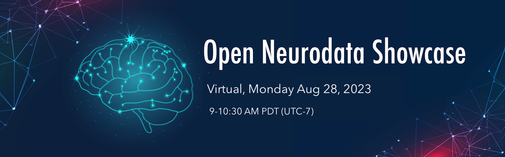

The combined report for NeuroDataReHack 2023 and the Open Neurodata Showcase 2023 is now available online at [PDF (GitHub)] [LaTeX (Overleaf)].
The DANDI Archive now has 175+ neurophysiology datasets in the Neurodata Without Borders format spanning many species, brain areas, task types, and imaging modalities. These include high-value datasets, e.g., from The Allen Institute, the MICrONS project, and the International Brain Laboratory, as well as diverse contributions from neuroscience labs around the world. In this event, we organize a virtual poster session in the Gather platform to bring together data contributors and anyone interested in reusing existing neurophysiology data. This virtual event offers a unique opportunity for participants to engage in discussions, explore dandisets, and allows data contributors to showcase their projects.
This virtual event is open to anyone interested in neurophysiology data, including but not limited to:
If you are interested in attending the event, register here.
If you are interested in presenting your dandiset(s), register as a presenter at Open Neurodata Showcase 2023 here.
| Session | Speakers | Time: Pacific |
|---|---|---|
| Gather space opens to participants | 8:55am | |
| Introduction to the virtual data showcase | Organizers | 9:00-9:20am |
| Virtual poster session | Data Contributors | 9:20-10:30am |
| Posters | Speakers |
|---|---|
| Allen Brain Observatory: Visual Coding Neuropixels Dataset | Josh Siegle, Allen Institute |
| A Brain-Wide Map of Neural Activity during Complex Behaviour | Olivier Winter, IBL |
| MICrONS Two Photon Functional Imaging | Paul Fahey, Baylor College of Medicine |
| The OpenScope Databook | Carter Peene, Allen Institute |
| Three datasets of human single-neuron electrophysiology recordings during working memory and long-term memory tasks | Michael Kyzar, Rutishauser Lab |
| Challenges and neuroethical considerations in sharing human neural data | Angelique C Paulk, Massachusetts General Hospital |
| Data on auditory cortex plasticity and oxytocin neuron responses in co-parental mice | Robert Froemke, NYU |
| Esr1+ hypothalamic-habenula neurons shape aversive states | Pierre Le Merre, Karolinska Institutet |
Program chairs:
This website and related content were prepared as an account of or to expedite work sponsored at least in part by the United States Government. While we strive to provide correct information, neither the United States Government nor any agency thereof, nor The Regents of the University of California, nor any of their employees, makes any warranty, express or implied, or assumes any legal responsibility for the accuracy, completeness, or usefulness of any information, apparatus, product, or process disclosed, or represents that its use would not infringe privately owned rights.
Reference herein to any specific commercial product, process, or service by its trade name, trademark, manufacturer, or otherwise, does not necessarily constitute or imply its endorsement, recommendation, or favoring by the United States Government or any agency thereof, or The Regents of the University of California. Use of the Laboratory or University’s name for endorsements is prohibited.
The views and opinions of authors expressed herein do not necessarily state or reflect those of the United States Government or any agency thereof or The Regents of the University of California. Neither Berkeley Lab nor its employees are agents of the US Government.
Berkeley Lab web pages link to many other websites. Such links do not constitute an endorsement of the content or company and we are not responsible for the content of such links.